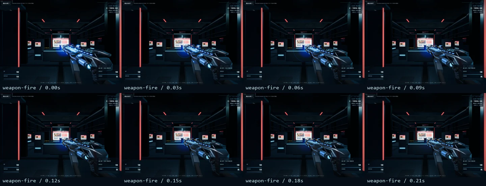
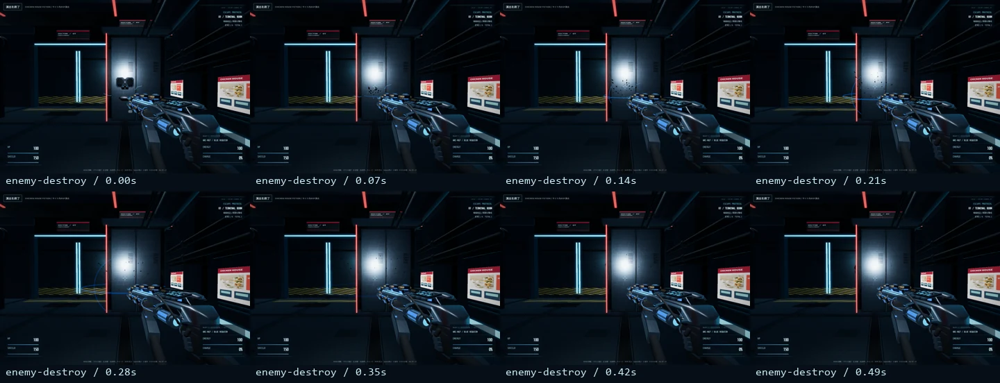
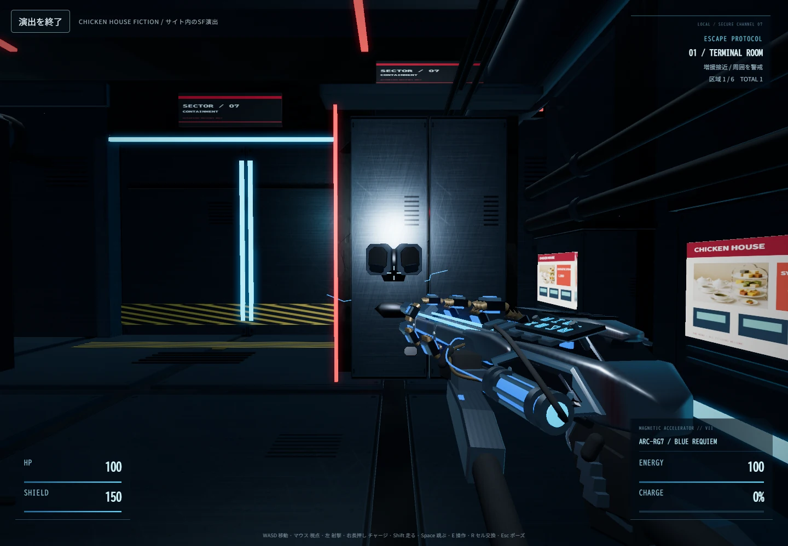
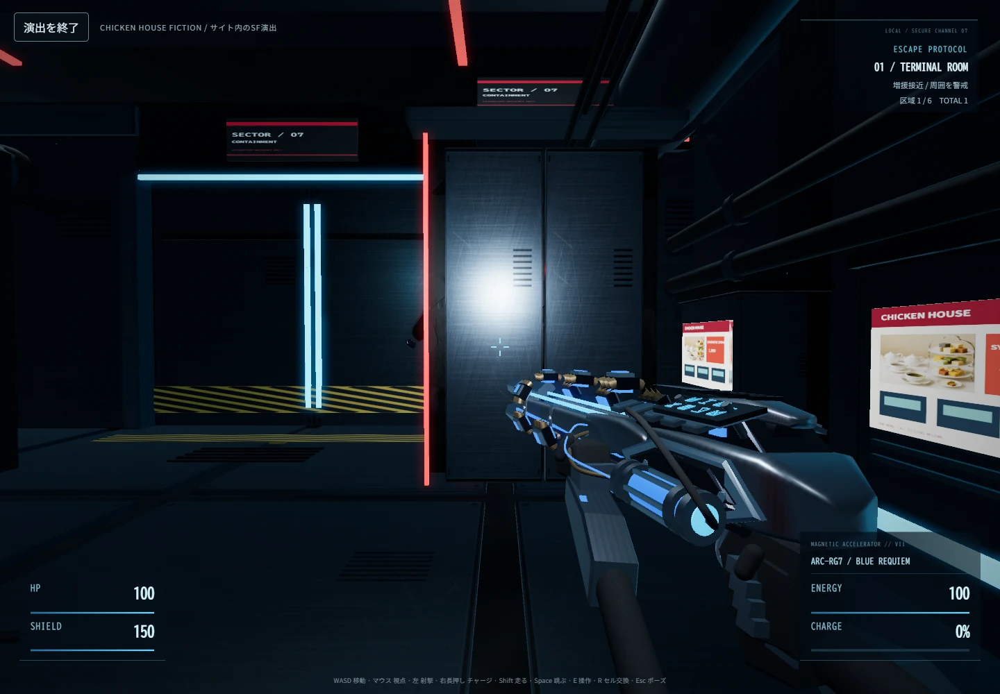
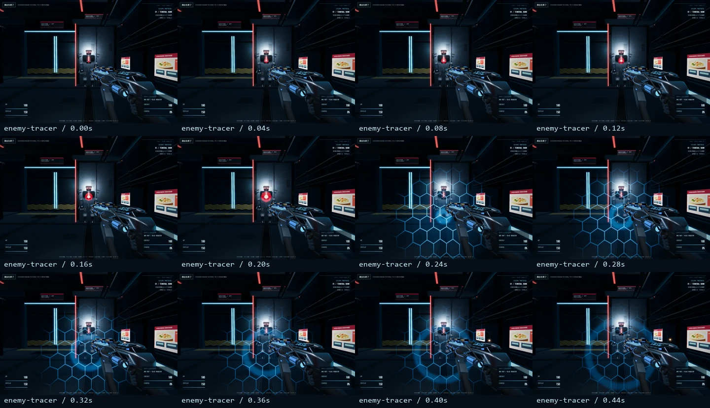
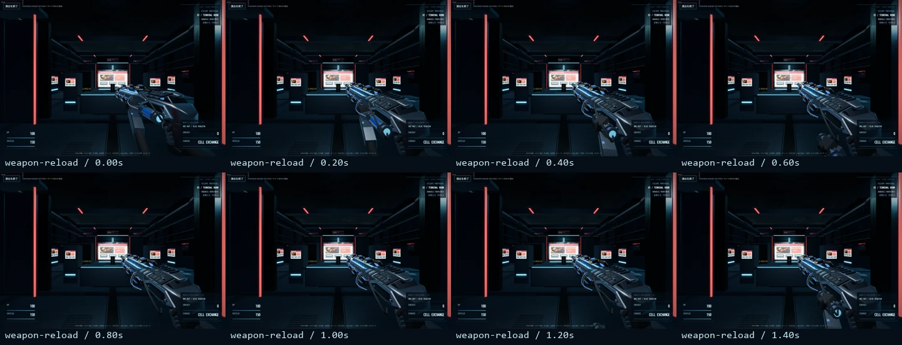
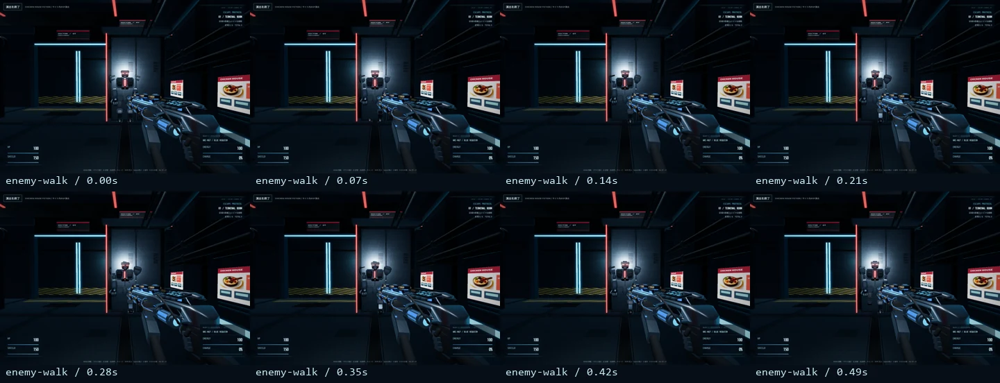
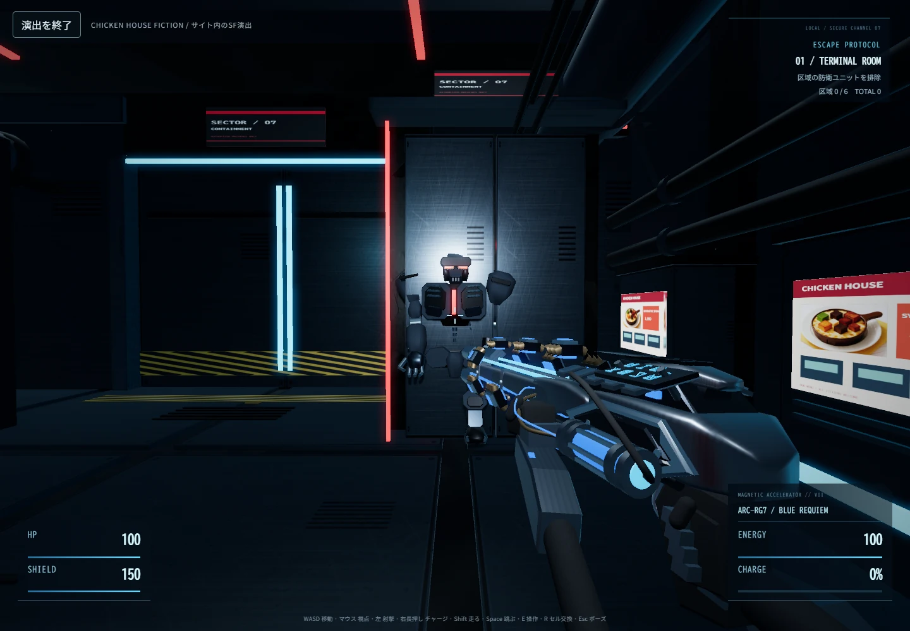
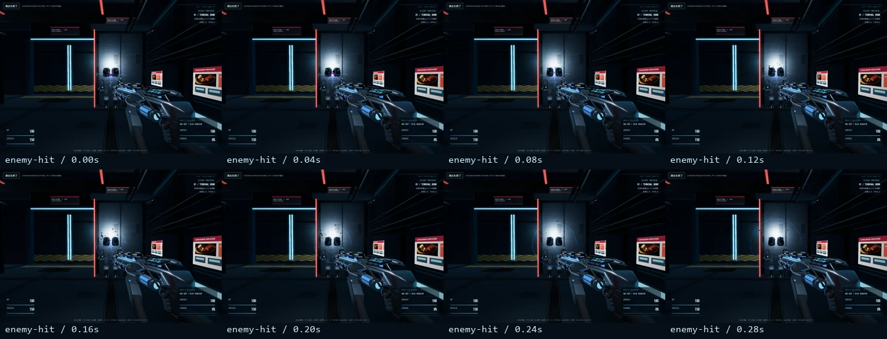
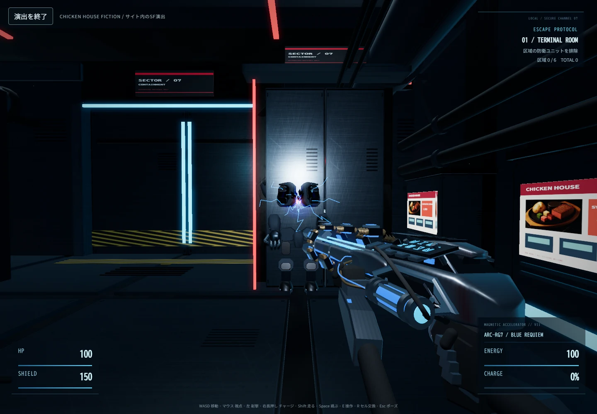

CHICKEN HOUSE / REALTIME PROCEDURAL ART / V4
青い反撃。赤い支配。
実装したゲームから撮影した実画面です。通常サイトは軽量なまま、PCは高品質・スマホはタッチ操作の軽量FPSへ。画像を選ぶと原寸で開きます。
実プレイ録画
18.8秒・1280×800・25fps。実時間の移動、射撃、セル交換。検証用の自動照準・射撃と定期回復を使用。録音は含みません。
改修前後
武器
処刑兵
支配者
固定視点 / 同じゲーム描画
武器の機構、3距離の敵、施設、支配者、シールド、縦横のタッチ操作。PC固定視点は1440×1000 High。スマホ画像はブラウザーエミュレーションで、実機の性能測定ではありません。
連続フレーム
同じ実装を固定時間刻みで進めた62フレーム。合成した理想画像ではありません。全フレームを開くと各原寸画像へ移動できます。
チャージ射撃 / 0.03秒刻み

チャージ射撃 / 0.03秒刻み全フレームを開く
破壊 / 0.07秒刻み

破壊 / 0.07秒刻み全フレームを開く

enemy-destroy-00enemy-destroy-01enemy-destroy-02enemy-destroy-03enemy-destroy-04enemy-destroy-05enemy-destroy-06enemy-destroy-07enemy-destroy-08
enemy-destroy-09敵弾 → 六角シールド → 反射 / 0.04秒刻み

敵弾 → 六角シールド → 反射 / 0.04秒刻み全フレームを開く
セル交換 / 0.20秒刻み

セル交換 / 0.20秒刻み全フレームを開く
歩行 / 0.07秒刻み

歩行 / 0.07秒刻み全フレームを開く
enemy-walk-00enemy-walk-01enemy-walk-02enemy-walk-03enemy-walk-04
enemy-walk-05enemy-walk-06enemy-walk-07enemy-walk-08enemy-walk-09 装甲被弾 / 0.04秒刻み

装甲被弾 / 0.04秒刻み全フレームを開く
enemy-hit-00
enemy-hit-01enemy-hit-02enemy-hit-03enemy-hit-04enemy-hit-05enemy-hit-06enemy-hit-07enemy-hit-08enemy-hit-09 確認できたことと制約
独立した画像批評で、武器・敵・支配者・射撃連番のMajor指摘を修正。反射した弾の視認性も再確認済み。手袋の指、敵の荷重経路、支配者の肩・肘掛け、破壊時の急な本体消失には磨く余地が残ります。
GTX1080Ti / Chrome157 / 1440×1000 High の60秒自動戦闘で平均59.84fps、フレーム間隔p95は16.9ms、GPU p95は7.99ms。生存敵は最大5体の計測で、12体の最悪条件やスマホ実機の性能保証ではありません。
参照研究のコード・アセットはコピーしていません。通常サイトのFPS読み込みなし、PC・スマホ操作、リロード、5区画の進行、終了復帰を検証しました。